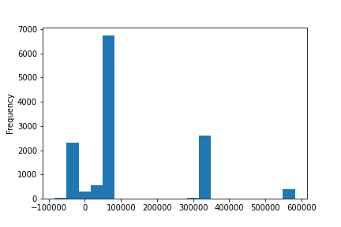

Part VII (pandas)
We'll talk about 'pandas' which is a very useful Python package that enables us to do Excel-like, or SQL-like, data manipulations in our code.
Often one will have:
While 'pandas' dependents on 'numpy', 'numpy' is the linear algebra, matrix manipulations, and performance (vectorizing) considerations. 'pandas' is oriented toward the data-scientist. 'pandas' adds the "tabular" manipulation, filtering rows, merging tables, creating "calculated columns" and more.
To create a dataframe one needs values that can fit into rows / columns table. For example we can assemble a dataframe with a dict where the keys are the "columns" and the values are lists with matching values. The lists should be of the same length.
(3, 2)
| name | age | |
|---|---|---|
| 0 | Jan | 30 |
| 1 | Oren | 20 |
| 2 | Michael | 40 |
Note that a 'pandas' dataframe has two indices, the columns index df.columns, and the rows index df.index.
An alternative can be to assemble a dataframe from "records" with the same structure.
def records():
for i in range(5):
yield (i + 1, i + ord('a'), 90 - i, 3 ** i)
pd.DataFrame.from_records(records(), columns=['c1','c2','c3', 'c4'])
| c1 | c2 | c3 | c4 | |
|---|---|---|---|---|
| 0 | 1 | 97 | 90 | 1 |
| 1 | 2 | 98 | 89 | 3 |
| 2 | 3 | 99 | 88 | 9 |
| 3 | 4 | 100 | 87 | 27 |
| 4 | 5 | 101 | 86 | 81 |
We can also initialize a dataframe from 'numpy' 2d-array:
| A | B | C | D | E | |
|---|---|---|---|---|---|
| 0 | -0.796475 | 1.094937 | 0.085857 | -0.422669 | 0.838842 |
| 1 | 0.193157 | 1.581320 | -0.154880 | -0.072739 | 0.124116 |
| 2 | 1.602135 | 0.443397 | -1.886092 | 0.763741 | -0.094495 |
| 3 | -1.904237 | -0.075916 | -0.160738 | 0.189941 | 2.368079 |
| 4 | -0.556937 | 0.989280 | 0.137683 | 1.488743 | -0.647949 |
| 5 | 1.350182 | -0.297231 | 0.854884 | -0.344520 | -0.129298 |
| 6 | -1.392316 | -2.541472 | 0.680830 | 1.210426 | -1.091972 |
| 7 | -0.525120 | 0.421930 | 1.668550 | 0.260011 | 1.383353 |
And of course, a lot of time we'll load a CSV file or a result of an SQL query from a database.
import pandas as pd
from pathlib import Path
train_path = Path("data/train")
df = pd.read_csv(train_path / "train.csv"); df.shape
(13000, 28)
In a notebook, we'll often examine the "head" of the dataframe.
| id | categoryA | categoryB | categoryC | categoryD | categoryE | categoryF | featureA | featureB | featureC | featureD | featureE | featureF | featureG | featureH | featureI | compositionA | compositionB | compositionC | compositionD | compositionE | compositionF | compositionG | compositionH | compositionI | compositionJ | unit | result | |
|---|---|---|---|---|---|---|---|---|---|---|---|---|---|---|---|---|---|---|---|---|---|---|---|---|---|---|---|---|
| 0 | a563699ca2a601c6ac64aa29986a00a90fb42b48741695b0526a286d504d17ca | catA_1 | catB_0 | catC_718 | catD_0 | catE_0 | catF_0 | 75808.375 | 4.457840 | 0.005718 | 122.299437 | 30.831906 | 0.0 | 2.806036e+12 | 0.000000 | 71176346.0 | 0.0 | 10.0 | 26.0 | 0.0 | 32.0 | 3.0 | 0.0 | 9.0 | 22.26 | 20.0 | unit_6 | 0.000458 |
| 1 | 91ab3eb3bcf6c8c1c5fe2da9ba671aa5a48c7369d9a50f32e1ddd735472b4b3c | catA_1 | catB_0 | catC_1309 | catD_0 | catE_0 | catF_0 | 75808.375 | 4.457840 | 0.005718 | 122.299437 | 30.831906 | 0.0 | 2.806036e+12 | 0.000000 | 71176346.0 | 0.0 | 10.0 | 26.0 | 0.0 | 32.0 | 3.0 | 0.0 | 9.0 | 22.26 | 20.0 | unit_6 | 0.000335 |
| 2 | 7128c51c554735d6c81862684ad6005ae12d2edbcd464487a7217fc72c03ba22 | catA_15 | catB_0 | catC_1309 | catD_0 | catE_0 | catF_0 | 75808.375 | 4.457840 | 0.005718 | 122.299437 | 30.831906 | 0.0 | 2.806036e+12 | 0.000000 | 71176346.0 | 0.0 | 10.0 | 26.0 | 0.0 | 32.0 | 3.0 | 0.0 | 9.0 | 22.26 | 20.0 | unit_4 | 0.054072 |
| 3 | c8144b52e4f63014de0a0d8e1c629bf0b05cb2696cfc23291b4f48e6491c4cb5 | catA_0 | catB_0 | catC_935 | catD_0 | catE_0 | catF_0 | 75808.375 | 4.457840 | 0.005718 | 122.299437 | 30.831906 | 2.0 | 2.806036e+12 | 0.000000 | 71176346.0 | 0.0 | 10.0 | 26.0 | 0.0 | 32.0 | 3.0 | 0.0 | 9.0 | 22.26 | 20.0 | unit_5 | 0.061143 |
| 4 | 88d15a5b2df6692f23d105ff1ae82ae026be00c9271eef33e0aea97fd2110cb6 | catA_22 | catB_0 | catC_1325 | catD_0 | catE_2 | catF_0 | -40055.250 | 4.363288 | 0.729194 | 93.677197 | 15.047884 | 4.0 | 1.464509e+12 | 87.158924 | 50941692.0 | 0.0 | 8.0 | 14.0 | 0.0 | 49.0 | 3.0 | 2.0 | 9.0 | 16.84 | 15.0 | unit_15 | 0.015439 |
The columns of a dataframes are series. Each column (serie) has its data type. We can have a quick summary of the dataframe with:
<class 'pandas.core.frame.DataFrame'>
RangeIndex: 13000 entries, 0 to 12999
Data columns (total 28 columns):
# Column Non-Null Count Dtype
--- ------ -------------- -----
0 id 13000 non-null object
1 categoryA 13000 non-null object
2 categoryB 13000 non-null object
3 categoryC 13000 non-null object
4 categoryD 13000 non-null object
5 categoryE 13000 non-null object
6 categoryF 13000 non-null object
7 featureA 12936 non-null float64
8 featureB 12936 non-null float64
9 featureC 12936 non-null float64
10 featureD 12936 non-null float64
11 featureE 12936 non-null float64
12 featureF 13000 non-null float64
13 featureG 12936 non-null float64
14 featureH 12936 non-null float64
15 featureI 12936 non-null float64
16 compositionA 12936 non-null float64
17 compositionB 12936 non-null float64
18 compositionC 12936 non-null float64
19 compositionD 12936 non-null float64
20 compositionE 12936 non-null float64
21 compositionF 12936 non-null float64
22 compositionG 12936 non-null float64
23 compositionH 12936 non-null float64
24 compositionI 12936 non-null float64
25 compositionJ 12936 non-null float64
26 unit 13000 non-null object
27 result 13000 non-null float64
dtypes: float64(20), object(8)
memory usage: 2.8+ MB
When 'matplotlib' is available (installed in the Python virtual environment), the following shall produce a plot.

Also very convenient:
unit_0 2548
unit_1 1618
unit_2 1004
unit_3 993
unit_4 962
unit_6 853
unit_5 840
unit_7 787
unit_8 740
unit_9 668
unit_10 589
unit_11 455
unit_12 348
unit_13 269
unit_14 164
unit_15 96
unit_16 55
unit_17 7
unit_18 4
Name: unit, dtype: int64
When we create a "new" dataframe from an existing one, a lot of times, we're still sharing the cells' memory. Often this is exactly what we want to avoid the extra cost in memory and performance. Just need to be aware of it, to avoid surprises. If needed, one can always 'copy'.
| name | age | |
|---|---|---|
| 0 | Jan | 30 |
| 1 | Oren | 20 |
| 2 | Michael | 40 |
| name | age | |
|---|---|---|
| 0 | Jan | 30 |
| 1 | Oren | 20 |
| name | age | |
|---|---|---|
| 0 | Jan | 31 |
| 1 | Oren | 20 |
| name | age | |
|---|---|---|
| 0 | Jan | 31 |
| 1 | Oren | 20 |
| 2 | Michael | 40 |
Groupby
With 'pandas' we can collect statistics about specific columns. It is also interesting to collect the statistics per value in another columns. For example, collect the survival rate (Titanic) based on gender, or on travel class. Such group based statistics is very useful in data analysis and also in ML, potentially helping the model in picking the relevant information from a categorical feature (ex. the gender, the travel class), this is called target encoding. Special care needs to be taken to verify the target encoding actually helps or causing overfitting, this should be evaluated case by case.
To get the per group statistics we use the 'df.groupby' functionality. The return type of 'groupby' on a dataframe is a 'DataFrameGroupBy'. This class allows iterating over "sub-dataframes", one per group, or also aggragating statistics per group.
df = pd.DataFrame(
{
"animal": "cat dog cat fish dog cat cat".split(),
"size": list("SSMMMLL"),
"weight": [8, 10, 11, 1, 20, 12, 12],
"adult": [False] * 5 + [True] * 2,
}
)
gb = df.groupby(["animal"])
gb.get_group("cat")
| animal | size | weight | adult | |
|---|---|---|---|---|
| 0 | cat | S | 8 | False |
| 2 | cat | M | 11 | False |
| 5 | cat | L | 12 | True |
| 6 | cat | L | 12 | True |
Above example is taken from Pandas Cookbook - Grouping
Not specific about 'groupby', but contains also 'groupby' examples and other good Pandas / Notebooks best practices: Vincent D. Warmerdam: Untitled12.ipynb | PyData Eindhoven 2019
Tidy data
We often get the data in somewhat different arrangement from what we would like to have for our data analysis, building ML models, etc. The data is given "wide" while we actually want it to be "long", or the other way around. To change the arrangement into what we need, may seem at first to be more sort-of an art than a science. However there are actually many things that we do see often and for which there exist a collection of formulas that are worth to get familiar with.
I will bring here for example a dataset I have played with in the past (Mammals). The dataset is given as a table. In the table Europe is divided into cells and for each cell one can see what mammals can be found in that cell. Each row in the table is about a specific cell. There are columns of three types, columns about the cell, columns related to conditions in the cell per-month (rain, temperatures, etc.), and binary colunms per mammal (presence).
Wrote a Medium article about it mammals-dataset-tidy-data And the relevant github link is mammals - Github
A quick summary of the steps taken there (Mammals dataset):
- Split the data into three tables, metadata about a cell, bio-climate features per-month about the cell, mammals-presence info about cells.
- 'melting' columns that actually contain information. Example 'mean_temp_feb_utm' columns was now a value under column 'variable', and next to the original value which is under the column 'value'.
- Spliting the values where needed into new columns. For example split 'mean_temp_feb_utm' from the 'variable' columns to the the values 'mean_temp' and 'feb_utm' under the columns 'statistics', 'month', respectively.
- pivoting the relevant values back into columns and values in those columns. For example, there should be a column called 'month' and having the relevant values, ex. 'feb_utm', and there should be columns of the bio-climate features, ex. 'mean_temp' with the matching values.
- We can then merge back tables as needed, for example I demonstrate there counting how many different mammal types are per cell, and showing that in a "map".
Strongly recommend the following PyData YouTube-recorded talk Daniel Chen: Cleaning and Tidying Data in Pandas | PyData DC 2018.
Experimenting with k-folds
When we use supervised learning, for example, in machine learning (ML) setting. We'll most likely want to verify the quality of our model on some left aside "training samples". We'll call those the "evaluation set" or also known as "test set". A common practice is for example, to keep 30% of the cases for evaluation, and train of the other 70% (train / test split). It is recommended to select the data points for the evaluation set randomly.
If we can afford the time, it might even better to repeat the experiment a few times, each time selecting a different evaluation set and training on all the other data points. For example we can take each time another 20% of the cases and train on the rest 80%, and repeat that 5 times so that each data point was 4 times in a training set, and 1 time in the test set. This setting is called cross validation.
We often use the 'scikit-learn' for exploratory data analysis (EDA) and for ML modeling. 'scikit-learn' contains also functions and classes that help with preprocessing, model selection and evaluation, and related tasks. The packages 'pandas' and 'scikit-learn' work well together. For example the following will prepare for us a "train / test split".
Remember to add 'scikit=learn' to your 'requirements.txt', followed by pip install -r requirements.txt, or just install it directly with for example pip install scikit=learn.
import pandas as pd
import numpy as np
from sklearn.datasets import fetch_openml
from sklearn.model_selection import train_test_split
X, y = fetch_openml("titanic", version=1, as_frame=True, return_X_y=True)
X.shape, y.shape
<class 'pandas.core.frame.DataFrame'>
RangeIndex: 1309 entries, 0 to 1308
Data columns (total 13 columns):
# Column Non-Null Count Dtype
--- ------ -------------- -----
0 pclass 1309 non-null float64
1 name 1309 non-null object
2 sex 1309 non-null category
3 age 1046 non-null float64
4 sibsp 1309 non-null float64
5 parch 1309 non-null float64
6 ticket 1309 non-null object
7 fare 1308 non-null float64
8 cabin 295 non-null object
9 embarked 1307 non-null category
10 boat 486 non-null object
11 body 121 non-null float64
12 home.dest 745 non-null object
dtypes: category(2), float64(6), object(5)
memory usage: 115.4+ KB
train_X, validation_X, train_y, validation_y = (
train_test_split(X, y, test_size=0.3, stratify=y, random_state=1)
)
train_X.shape, validation_X.shape
Thanks to the usage of 'stratify' with the target 'y', we have about the same ratio of survived to did-not survive in the train set and in the validation set.
(0 0.617904
1 0.382096
Name: survived, dtype: float64,
'----------------------------------------',
0 0.618321
1 0.381679
Name: survived, dtype: float64)
For cross validation setting, one can either use 'cross_val_score', letting the function run the cross validation experiment and return the final evaluation metrics as in:
And you get a 'numpy' array with (5 in this case) results.
Another way to a achieve a cross validation split, is with the class 'StratifiedKFold'.
from sklearn.model_selection import StratifiedKFold
skf = StratifiedKFold(n_splits=5, shuffle=True, random_state=1)
for fold, (train_index, validation_index) in enumerate(skf.split(X, y)):
print(f"Fold {fold}:")
print(y[validation_index].value_counts())
print()
Fold 0:
0 162
1 100
Name: survived, dtype: int64
Fold 1:
0 162
1 100
Name: survived, dtype: int64
Fold 2:
0 162
1 100
Name: survived, dtype: int64
Fold 3:
0 162
1 100
Name: survived, dtype: int64
Fold 4:
0 161
1 100
Name: survived, dtype: int64
Here is an idea, taken from Approaching (Almost) Any Machine Learning Problem by Abhishek Thakur.
Most likely we'll want to compare various ML model classes and models as to find the one that gives best desired results on the validation set. Potentially use different environments, programming languages, and libraries. Let's start by fixing the fold for each data point. We'll save the data with the new column added. This can be used later in any future experiment.
X['kfold'] = -1
for fold, (train_index, validation_index) in enumerate(skf.split(X, y)):
X.loc[validation_index, 'kfold'] = fold
# Here we'll save the dataframe for future usages. Assume we have done so.
X.kfold.value_counts()
When we want to do a cross validation experiment, we'll rely on the presense of the 'kfold' columns: